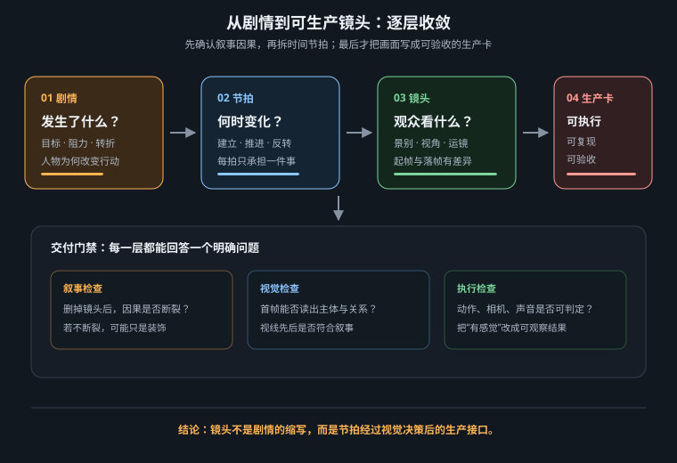

让语言模型负责结构化、补缺与反证，让导演保留因果、视点和取舍的最终控制权

文学以概念、心理和时间跳跃组织信息，镜头只能记录某个视点在一段连续时间里能看见、听见的变化。“她终于理解这颗行星意味着家”不能直接生成；可拍的是她停止呼吸、手离开控制台、蓝光爬过眼角。剧本拆分的核心操作，是把抽象叙述翻译成可观察证据，并决定证据按什么顺序交给观众。
最小镜头不按语法划分，而按状态变化划分：镜头开始时 A 为真，结束时 B 为真。若一句话包含“走进来、发现警报、拔枪并冲出去”，其中有进入、识别、决策、行动四次状态变化，至少应拆成三到四镜。反过来，一个五秒镜头若没有新信息、情绪变化或空间关系变化，即使画面华丽也没有叙事购买力。
| 原文类型 | 不可直接拍的部分 | 可见证据 | 适合的镜头功能 |
|---|---|---|---|
| 心理 | 她意识到被骗了 | 笑容停住，视线落到伪造印章，手慢慢收回 | 识别 + 反应，最好拆开 |
| 概括 | 城市经历了漫长旱季 | 水位刻度、空水箱、排队的人、龟裂广场 | 三镜蒙太奇或一镜强意象 |
| 因果 | 爆炸迫使他改变路线 | 前路爆开 → 他刹停 → 看向维修通道 | 动作匹配的三段因果 |
| 时间跳跃 | 十年后她回到旧屋 | 同构图中的门牌锈蚀、身高刻痕与成年手掌 | 匹配剪辑或明确转场 |
| 关系 | 两人已不再信任彼此 | 不接递来的钥匙、各占画面一侧、无视线交汇 | 双人客观镜头 + 反应特写 |
“一分钟等于十镜”只能做粗估，不能当铁律。镜头数取决于信息密度、动作复杂度和目标节奏。先把故事压成节拍 beat：每个节拍是一项不可再删的叙事变化；再决定一个节拍用一镜、对切两镜，还是用一组蒙太奇。这样时长从叙事需要推导，而不是平均分配。
观众需要时间完成“定位主体 → 识别变化 → 理解意义”。建立镜头可稍长，反应特写可能只需两秒；动作越快不代表镜头必须越短，复杂空间反而需要更清楚的建立。用 animatic 实际播放，而不是只看表格里的秒数。
语言模型擅长把长文本整理成固定字段、发现缺失和批量提出替代方案；它不拥有项目的审美意图，也不知道视频模型、预算与资产的真实边界。正确用法不是“一键导演”，而是三轮分工：第一轮结构化，第二轮反证，第三轮只改被指出的问题。每轮输入都带上已批准事实，避免模型在重写中悄悄发明角色、地点和转折。
| 轮次 | LLM 的任务 | 必须固定 | 人工决策 |
|---|---|---|---|
| 结构化 | 提取节拍，生成镜头候选与可见动作 | 原作事实、总时长、资产与禁用项 | 因果是否正确，哪些信息值得成镜 |
| 审计 | 找重复、动作过载、跳轴、缺铺垫、时长超支 | 当前镜头表，不允许直接改写 | 问题是否真实，修复优先级 |
| 定向修订 | 只为指定问题给 2–3 个方案 | 未被点名的镜头和事实全部冻结 | 选择方案并写最终镜头卡 |
【角色】
你是叙事编辑与可制作性审计员，不是最终导演。你的工作是把输入剧情
转成镜头候选，并明确不确定项；不得新增人物、地点、道具或世界观事实。
【项目约束】
总时长：45 秒；目标画幅：16:9；最多 9 镜；单镜建议 3–6 秒。
生成边界：每镜一个主要主体动作、一种主要运镜；避免多人复杂肢体互动、
长动作链、无首尾状态的抽象情绪。角色固定锚点见“连续性事实”。
【连续性事实】
舰长岚：红色立领制服，银色扣在右肩；始终位于驾驶舱轴线左侧。
蓝色行星：首次出现前不得在任何反射或屏幕中泄露。
舰桥警报：发现信号后由琥珀色转为静默蓝色。
【剧情】
{粘贴剧情原文}
【任务，按顺序完成】
1. 先列 5–7 个节拍，每项写“开始状态 → 可见变化 → 结束状态”。
2. 再给镜头表：镜号｜时长｜镜头功能｜客观/主观｜景别｜可见动作｜
A 状态｜B 状态｜声音接点｜制作风险（低/中/高 + 原因）。
3. 总时长必须精确等于 45 秒；不得用旁白替代本可视觉化的信息。
4. 单列“需要导演决定”的歧义，不要擅自补完。
5. 最后做审计：重复信息、动作过载、视线/运动方向、首次揭示、
前后状态不闭合、预算超支。此轮不要润色文风。
【输出要求】
先节拍、后镜头表、再歧义与审计。若约束冲突，指出冲突并给两种取舍，
不要静默违反规则。
关键不是“你是专业编剧”这种身份口号，而是事实锁、字段、风险标记和冲突处理。要求列出歧义，可以阻止模型用看似流畅的虚构填平信息缺口；要求 A/B 状态，则迫使每镜产生可验收变化。
原文：“归乡号漂泊三百年后收到微弱信号。岚起初以为只是噪声，直到她看见蓝色行星，才相信旅程结束了。”直接生成会把“收到、怀疑、验证、看见、相信”揉进一个舷窗镜头。更清晰的拆法如下：
| 镜号 | 时长 | 功能与可见变化 | 接点 | 风险 |
|---|---|---|---|---|
| S01 | 5s | 建立：星舰从无灯到一条舱灯亮起 | 低频引擎声持续 | 低 |
| S02 | 4s | 触发：噪声波形中出现稳定脉冲 | 脉冲声桥 | 低 |
| S03 | 4s | 怀疑：岚暂停操作但没有抬头 | 视线向画右 | 低 |
| S04 | 5s | 验证：手动滤波后脉冲变为坐标 | 蓝色警报熄静 | 中，界面文字后期做 |
| S05 | 5s | 揭示：过肩镜中行星从舷窗右缘出现 | 尾态接眼部方向 | 中，锁空间 |
| S06 | 3s | 反应：眼角蓝光变亮，呼吸停顿 | 音乐在此进入 | 低 |
| S07 | 6s | 确认：她放下手，星舰驶向行星 | 与开场远景呼应 | 低 |
“相信”没有被直接写进画面，而由验证成功、首次揭示和身体反应共同证明。行星严格到 S05 才出现，观众与角色同时获得信息，情绪是共鸣；若想制造期待，可让观众在 S02 先辨认脉冲含义，但角色仍怀疑。
平均分镜会把每镜都设成五秒，关键揭示没有停顿；同义重复会用全景、中景、特写连续表达同一信息；抽象动作会写“感到希望”“意识到命运”，没有可见证据；动作链膨胀会在一镜里安排走、转、拿、说、跑；连续性失忆会镜像左右件或提前泄露道具；伪精确会输出看似专业的焦距与秒数，却无法解释它们服务哪个信息。根因都是把格式完整误当成导演判断。
同一轮生成后立即问“是否优秀”，模型倾向为自己的方案辩护。更有效的是开新轮，只提供镜头表与明确审计维度，要求只报问题和证据，不先重写；导演确认问题后，再定向修订。评审与创作分离，才能减少语言流畅度带来的偏见。
通过这六项，故事才算变成“可生产的镜头候选”。下一章将继续把候选转成能指导首帧、动态生成、剪辑和验收的镜头生产卡。